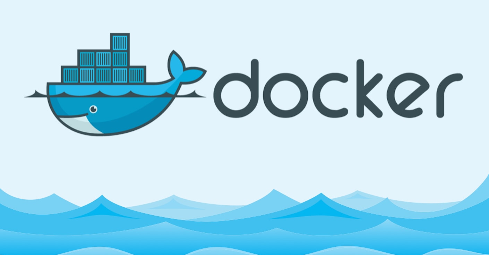

Docker

Docker is a powerful tool used for developing, packaging, and deploying applications efficiently. Docker is a container management service. Docker was released in 2013. It is open-source and available for different platforms like Windows, macOS, and Linux. Docker is quickly shipping, testing, and deploying code. So that it reduces your delay between writing code and running it in production. You can create self-contained environments known as containers. That can run consistently on different platforms.
Containerization
Containerization is OS-based virtualization that creates multiple virtual units in the userspace, known as Containers. Containers share the same host kernel but are isolated from each other through private namespaces and resource control mechanisms at the OS level. Container-based Virtualization provides a different level of abstraction in terms of virtualization and isolation when compared with hypervisors. Hypervisors use a lot of hardware which results in overhead in terms of virtualizing hardware and virtual device drivers. A full operating system (e.g -Linux, Windows) runs on top of this virtualized hardware in each virtual machine instance. But in contrast, containers implement isolation of processes at the operating system level, thus avoiding such overhead. These containers run on top of the same shared operating system kernel of the underlying host machine and one or more processes can be run within each container. In containers you don’t have to pre-allocate any RAM, it is allocated dynamically during the creation of containers while in VMs you need to first pre-allocate the memory and then create the virtual machine. Containerization has better resource utilization compared to VMs and a short boot-up process. It is the next evolution in virtualization.VIRTUAL MACHINE vs DOCKER
| Virtual Machine | Docker |
|---|---|
| Virtual machines run on a virtual hardware and guest OS will be loaded in its own memory. | Guests share the same OS, which is the Host OS, which is loaded in the physical memory. |
| Communication between guests are through network devices, may be software. | Communication between guests is through pipes, sockets, bridges etc. |
| Security depends on the hypervisor. | Lacks security measures. |
| More overhead due to its complexity. | Less overhead as it is lightweight containers. |
| Sharing of libraries and files are not possible. | Sharing of file possible (Ex: using SCP command in LINUX). |
| Takes time in booting. | Faster booting. |
| Uses more memory as it has to store the complete OS for each guest. | Less memory usage, as it shares the Host OS. |